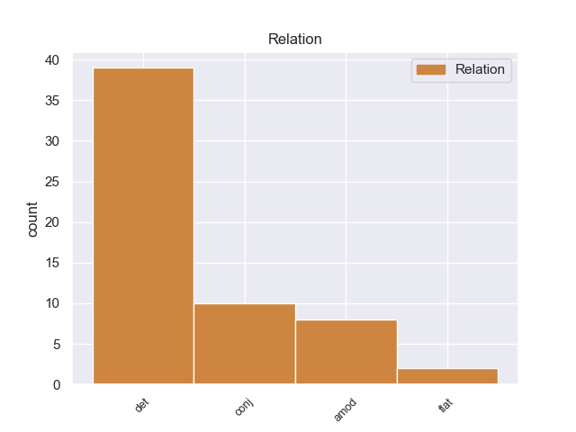
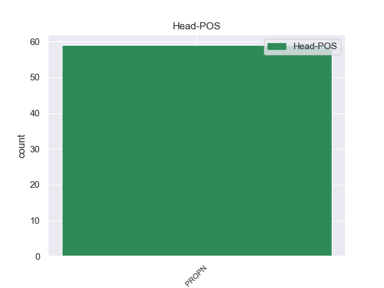
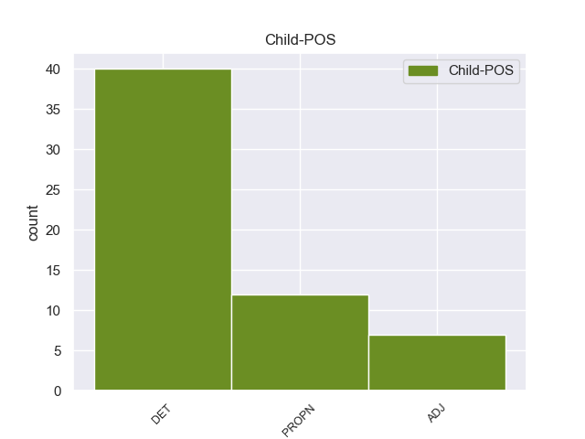

Distribution of features within this leaf



Agreement Rules sorted by frequency.
- When the dependent token is the determiner(det) of the head token, and the head token is PROPN and the dependent token is DET.
1 Σ _ _ _ _ 0 _ _ _
2 την _ _ _ _ 0 _ _ _
3 Παναγία _ _ _ _ 0 _ _ _
4 της _ _ _ _ 0 _ _ _
5 Άμμου _ _ _ _ 0 _ _ _
6 βρίσκεται _ _ _ _ 0 _ _ _
7 η _ _ _ _ 0 _ _ _
8 Παναγία παναγία PROPN _ Case=Gen|Gender=Fem|Number=Sing 0 _ _ _
9 η _ _ _ _ 0 _ _ _
10 Μοναχή _ _ _ _ 0 _ _ _
11 , _ _ _ _ 0 _ _ _
12 μια _ _ _ _ 0 _ _ _
13 σπάνια _ _ _ _ 0 _ _ _
14 απεικόνιση _ _ _ _ 0 _ _ _
15 της _ _ _ _ 0 _ _ _
16 Παναγίας _ _ _ _ 0 _ _ _
17 χωρίς _ _ _ _ 0 _ _ _
18 το _ _ _ _ 0 _ _ _
19 Θείο _ _ _ _ 0 _ _ _
20 Βρέφος _ _ _ _ 0 _ _ _
21 , _ _ _ _ 0 _ _ _
22 η _ _ _ _ 0 _ _ _
23 Παναγία _ _ _ _ 0 _ _ _
24 η _ _ _ _ 0 _ _ _
25 Κόγχη _ _ _ _ 0 _ _ _
26 πιθανολογείται _ _ _ _ 0 _ _ _
27 πως _ _ _ _ 0 _ _ _
28 κτίστηκε _ _ _ _ 0 _ _ _
29 σ _ _ _ _ 0 _ _ _
30 τη _ _ _ _ 0 _ _ _
31 θέση _ _ _ _ 0 _ _ _
32 του _ _ _ _ 0 _ _ _
33 ιερού _ _ _ _ 0 _ _ _
34 της _ _ _ _ 0 _ _ _
35 Εκβατήριας _ _ _ _ 0 _ _ _
36 Αρτέμιδος _ _ _ _ 0 _ _ _
37 ενώ _ _ _ _ 0 _ _ _
38 ο _ _ _ _ 0 _ _ _
39 Άγιος άγιοςς DET _ Case=Gen|Gender=Fem|Number=Sing 8 det _ _
40 Γεώργιος _ _ _ _ 0 _ _ _
41 ο _ _ _ _ 0 _ _ _
42 Αφέντης _ _ _ _ 0 _ _ _
43 κτίστηκε _ _ _ _ 0 _ _ _
44 το _ _ _ _ 0 _ _ _
45 17ο _ _ _ _ 0 _ _ _
46 αιώνα _ _ _ _ 0 _ _ _
47 και _ _ _ _ 0 _ _ _
48 έχει _ _ _ _ 0 _ _ _
49 πολλές _ _ _ _ 0 _ _ _
50 σπάνιες _ _ _ _ 0 _ _ _
51 και _ _ _ _ 0 _ _ _
52 αξιόλογες _ _ _ _ 0 _ _ _
53 εικόνες _ _ _ _ 0 _ _ _
54 . _ _ _ _ 0 _ _ _
1 Μικρή _ _ _ _ 0 _ _ _
2 και _ _ _ _ 0 _ _ _
3 Μεγάλη _ _ _ _ 0 _ _ _
4 Άμμος άμμος PROPN PROPN Case=Nom|Gender=Fem|Number=Sing 0 _ _ _
5 , _ _ _ _ 0 _ _ _
6 Πισίνα _ _ _ _ 0 _ _ _
7 , _ _ _ _ 0 _ _ _
8 Γαλλικός _ _ _ _ 0 _ _ _
9 Μώλος _ _ _ _ 0 _ _ _
10 , _ _ _ _ 0 _ _ _
11 Ζάβια _ _ _ _ 0 _ _ _
12 , _ _ _ _ 0 _ _ _
13 Μεγάλο _ _ _ _ 0 _ _ _
14 Στάφο _ _ _ _ 0 _ _ _
15 , _ _ _ _ 0 _ _ _
16 Πέρδικα _ _ _ _ 0 _ _ _
17 , _ _ _ _ 0 _ _ _
18 Ζέρη _ _ _ _ 0 _ _ _
19 , _ _ _ _ 0 _ _ _
20 Αρίλλας Αρίλλας PROPN PROPN Case=Nom|Gender=Masc|Number=Sing 4 conj _ SpaceAfter=No
21 . _ _ _ _ 0 _ _ _
1 Μικρή _ _ _ _ 0 _ _ _
2 και _ _ _ _ 0 _ _ _
3 Μεγάλη _ _ _ _ 0 _ _ _
4 Άμμος _ _ _ _ 0 _ _ _
5 , _ _ _ _ 0 _ _ _
6 Πισίνα _ _ _ _ 0 _ _ _
7 , _ _ _ _ 0 _ _ _
8 Γαλλικός _ _ _ _ 0 _ _ _
9 Μώλος _ _ _ _ 0 _ _ _
10 , _ _ _ _ 0 _ _ _
11 Ζάβια _ _ _ _ 0 _ _ _
12 , _ _ _ _ 0 _ _ _
13 Μεγάλο μεγάλος ADJ ADJ Case=Nom|Gender=Neut|Number=Sing 14 amod _ _
14 Στάφο Στάφο PROPN PROPN Case=Nom|Gender=Neut|Number=Sing 0 _ _ _
15 , _ _ _ _ 0 _ _ _
16 Πέρδικα _ _ _ _ 0 _ _ _
17 , _ _ _ _ 0 _ _ _
18 Ζέρη _ _ _ _ 0 _ _ _
19 , _ _ _ _ 0 _ _ _
20 Αρίλλας _ _ _ _ 0 _ _ _
21 . _ _ _ _ 0 _ _ _
1 Την _ _ _ _ 0 _ _ _
2 μεθεπομένη _ _ _ _ 0 _ _ _
3 σχημάτισε _ _ _ _ 0 _ _ _
4 κυβέρνηση _ _ _ _ 0 _ _ _
5 ο _ _ _ _ 0 _ _ _
6 Δημήτριος Δημήτριος PROPN PROPN Case=Nom|Gender=Masc|Number=Sing 0 _ _ _
7 Ράλλης Ράλλης PROPN PROPN Case=Nom|Gender=Masc|Number=Sing 6 flat _ SpaceAfter=No
8 , _ _ _ _ 0 _ _ _
9 παραιτήθηκε _ _ _ _ 0 _ _ _
10 ο _ _ _ _ 0 _ _ _
11 Κουντουριώτης _ _ _ _ 0 _ _ _
12 κι _ _ _ _ 0 _ _ _
13 έγινε _ _ _ _ 0 _ _ _
14 αντιβασίλισσα _ _ _ _ 0 _ _ _
15 η _ _ _ _ 0 _ _ _
16 βασιλομήτωρ _ _ _ _ 0 _ _ _
17 Όλγα _ _ _ _ 0 _ _ _
18 μέχρι _ _ _ _ 0 _ _ _
19 να _ _ _ _ 0 _ _ _
20 γίνει _ _ _ _ 0 _ _ _
21 δημοψήφισμα _ _ _ _ 0 _ _ _
22 , _ _ _ _ 0 _ _ _
23 το _ _ _ _ 0 _ _ _
24 οποίο _ _ _ _ 0 _ _ _
25 θα _ _ _ _ 0 _ _ _
26 επανέφερε _ _ _ _ 0 _ _ _
27 τον _ _ _ _ 0 _ _ _
28 εξόριστο _ _ _ _ 0 _ _ _
29 Κωνσταντίνο _ _ _ _ 0 _ _ _
30 . _ _ _ _ 0 _ _ _
Disagree Examples:
1 Το _ _ _ _ 0 _ _ _
2 ταπεινό _ _ _ _ 0 _ _ _
3 τέμενος _ _ _ _ 0 _ _ _
4 δεν _ _ _ _ 0 _ _ _
5 συγκρίνεται _ _ _ _ 0 _ _ _
6 με _ _ _ _ 0 _ _ _
7 το _ _ _ _ 0 _ _ _
8 παλάτι _ _ _ _ 0 _ _ _
9 του _ _ _ _ 0 _ _ _
10 Μπαχτσισαράι _ _ _ _ 0 _ _ _
11 , _ _ _ _ 0 _ _ _
12 την _ _ _ _ 0 _ _ _
13 έδρα _ _ _ _ 0 _ _ _
14 του ο DET DET Case=Gen|Definite=Def|Gender=Masc|Number=Sing|PronType=Art 16 det _ _
15 Κριμαϊκού _ _ _ _ 0 _ _ _
16 Χανάτου Χανάτου PROPN PROPN Case=Nom|Gender=Masc|Number=Sing 0 _ _ _
17 , _ _ _ _ 0 _ _ _
18 το _ _ _ _ 0 _ _ _
19 οποίο _ _ _ _ 0 _ _ _
20 αποθανάτισε _ _ _ _ 0 _ _ _
21 σ _ _ _ _ 0 _ _ _
22 την _ _ _ _ 0 _ _ _
23 ποίησή _ _ _ _ 0 _ _ _
24 του _ _ _ _ 0 _ _ _
25 ο _ _ _ _ 0 _ _ _
26 Αλεξάντερ _ _ _ _ 0 _ _ _
27 Πούσκιν _ _ _ _ 0 _ _ _
28 , _ _ _ _ 0 _ _ _
29 και _ _ _ _ 0 _ _ _
30 το _ _ _ _ 0 _ _ _
31 οποίο _ _ _ _ 0 _ _ _
32 έπεσε _ _ _ _ 0 _ _ _
33 σ _ _ _ _ 0 _ _ _
34 τα _ _ _ _ 0 _ _ _
35 χέρια _ _ _ _ 0 _ _ _
36 της _ _ _ _ 0 _ _ _
37 αυτοκρατορικής _ _ _ _ 0 _ _ _
38 Ρωσίας _ _ _ _ 0 _ _ _
39 το _ _ _ _ 0 _ _ _
40 18ο _ _ _ _ 0 _ _ _
41 αιώνα _ _ _ _ 0 _ _ _
42 . _ _ _ _ 0 _ _ _
1 Το _ _ _ _ 0 _ _ _
2 ταπεινό _ _ _ _ 0 _ _ _
3 τέμενος _ _ _ _ 0 _ _ _
4 δεν _ _ _ _ 0 _ _ _
5 συγκρίνεται _ _ _ _ 0 _ _ _
6 με _ _ _ _ 0 _ _ _
7 το _ _ _ _ 0 _ _ _
8 παλάτι _ _ _ _ 0 _ _ _
9 του _ _ _ _ 0 _ _ _
10 Μπαχτσισαράι _ _ _ _ 0 _ _ _
11 , _ _ _ _ 0 _ _ _
12 την _ _ _ _ 0 _ _ _
13 έδρα _ _ _ _ 0 _ _ _
14 του _ _ _ _ 0 _ _ _
15 Κριμαϊκού κριμαϊκός ADJ ADJ Case=Gen|Gender=Masc|Number=Sing 16 amod _ _
16 Χανάτου Χανάτου PROPN PROPN Case=Nom|Gender=Masc|Number=Sing 0 _ _ _
17 , _ _ _ _ 0 _ _ _
18 το _ _ _ _ 0 _ _ _
19 οποίο _ _ _ _ 0 _ _ _
20 αποθανάτισε _ _ _ _ 0 _ _ _
21 σ _ _ _ _ 0 _ _ _
22 την _ _ _ _ 0 _ _ _
23 ποίησή _ _ _ _ 0 _ _ _
24 του _ _ _ _ 0 _ _ _
25 ο _ _ _ _ 0 _ _ _
26 Αλεξάντερ _ _ _ _ 0 _ _ _
27 Πούσκιν _ _ _ _ 0 _ _ _
28 , _ _ _ _ 0 _ _ _
29 και _ _ _ _ 0 _ _ _
30 το _ _ _ _ 0 _ _ _
31 οποίο _ _ _ _ 0 _ _ _
32 έπεσε _ _ _ _ 0 _ _ _
33 σ _ _ _ _ 0 _ _ _
34 τα _ _ _ _ 0 _ _ _
35 χέρια _ _ _ _ 0 _ _ _
36 της _ _ _ _ 0 _ _ _
37 αυτοκρατορικής _ _ _ _ 0 _ _ _
38 Ρωσίας _ _ _ _ 0 _ _ _
39 το _ _ _ _ 0 _ _ _
40 18ο _ _ _ _ 0 _ _ _
41 αιώνα _ _ _ _ 0 _ _ _
42 . _ _ _ _ 0 _ _ _
1 Σύμφωνα _ _ _ _ 0 _ _ _
2 με _ _ _ _ 0 _ _ _
3 αξιωματούχους _ _ _ _ 0 _ _ _
4 της ο DET _ Case=Gen|Definite=Def|Gender=Fem|Number=Sing|PronType=Art 9 det _ _
5 Ν. _ _ _ _ 0 _ _ _
6 Κορέας _ _ _ _ 0 _ _ _
7 , _ _ _ _ 0 _ _ _
8 η _ _ _ _ 0 _ _ _
9 Πιονγκγιάνγκ πιονγκγιάνγκ PROPN _ Case=Acc|Gender=Fem|Number=Sing 0 _ _ _
10 πραγματοποίησε _ _ _ _ 0 _ _ _
11 50 _ _ _ _ 0 _ _ _
12 γύρους _ _ _ _ 0 _ _ _
13 εκτοξεύσεων _ _ _ _ 0 _ _ _
14 , _ _ _ _ 0 _ _ _
15 ωστόσο _ _ _ _ 0 _ _ _
16 τα _ _ _ _ 0 _ _ _
17 πυρά _ _ _ _ 0 _ _ _
18 της _ _ _ _ 0 _ _ _
19 δεν _ _ _ _ 0 _ _ _
20 ξεπέρασαν _ _ _ _ 0 _ _ _
21 τη _ _ _ _ 0 _ _ _
22 συνοριακή _ _ _ _ 0 _ _ _
23 γραμμή _ _ _ _ 0 _ _ _
24 . _ _ _ _ 0 _ _ _
1 Πάντως _ _ _ _ 0 _ _ _
2 , _ _ _ _ 0 _ _ _
3 το _ _ _ _ 0 _ _ _
4 Πεντάγωνο πεντάγωνο PROPN _ Case=Gen|Gender=Fem|Number=Sing 0 _ _ _
5 δεν _ _ _ _ 0 _ _ _
6 σκοπεύει _ _ _ _ 0 _ _ _
7 να _ _ _ _ 0 _ _ _
8 στείλει _ _ _ _ 0 _ _ _
9 στρατιώτες _ _ _ _ 0 _ _ _
10 σ _ _ _ _ 0 _ _ _
11 το ο DET _ Case=Acc|Gender=Fem|Number=Sing 4 det _ _
12 Μάλι _ _ _ _ 0 _ _ _
13 . _ _ _ _ 0 _ _ _
1 Το _ _ _ _ 0 _ _ _
2 πρόγραμμα _ _ _ _ 0 _ _ _
3 της ο DET _ Case=Gen|Definite=Def|Gender=Fem|Number=Sing|PronType=Art 4 det _ _
4 Προεδρίας προεδρίας PROPN _ Case=Acc|Gender=Fem|Number=Sing 0 _ _ _
5 σας _ _ _ _ 0 _ _ _
6 ακολουθεί _ _ _ _ 0 _ _ _
7 τη _ _ _ _ 0 _ _ _
8 συνηθισμένη _ _ _ _ 0 _ _ _
9 γραμμή _ _ _ _ 0 _ _ _
10 της _ _ _ _ 0 _ _ _
11 εξαμηνιαίας _ _ _ _ 0 _ _ _
12 προσέγγισης _ _ _ _ 0 _ _ _
13 του _ _ _ _ 0 _ _ _
14 Συμβουλίου _ _ _ _ 0 _ _ _
15 , _ _ _ _ 0 _ _ _
16 να _ _ _ _ 0 _ _ _
17 στηρίζεται _ _ _ _ 0 _ _ _
18 σε _ _ _ _ 0 _ _ _
19 όλες _ _ _ _ 0 _ _ _
20 τις _ _ _ _ 0 _ _ _
21 δυνατές _ _ _ _ 0 _ _ _
22 επιτυχίες _ _ _ _ 0 _ _ _
23 . _ _ _ _ 0 _ _ _